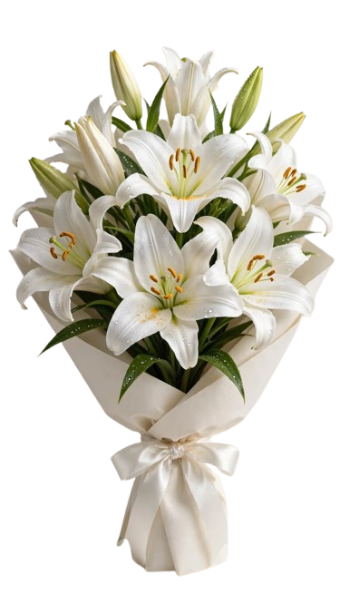
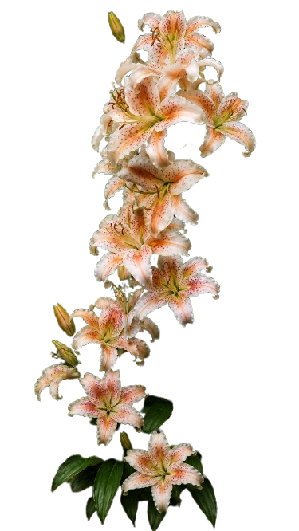

Casablanca Lily
Timeless elegance in every petal
The Casablanca lily is widely regarded as one of the most beautiful and beloved flowers in the world, admired for its pure white petals, elegant form, and captivating fragrance. Belonging to the Oriental lily family, this flower stands out for its large, trumpet-shaped blooms that seem to embody grace and simplicity all at once.
Beyond its visual appeal, the Casablanca lily carries a rich fragrance and a deep symbolic meaning, often associated with purity, devotion, and new beginnings. Whether encountered in a garden, a bouquet, or simply through its story, this flower invites us to pause and appreciate the delicate artistry of the natural world.
About Casablanca Lily
What is a Casablanca lily?
The Casablanca lily (Lilium 'Casa Blanca') is one of the most celebrated members of the Oriental lily family, prized for its striking pure white blooms and intoxicating fragrance. Its large, trumpet-shaped petals can span up to 8 inches across, curling gracefully backward to reveal prominent burgundy-red anthers dusted with rust-coloured pollen. This dramatic contrast gives the flower an unmistakable, almost theatrical presence in any garden or arrangement.
One of the defining characteristics of the Casablanca lily is its powerful, sweet fragrance, which many consider among the most intense of all lily varieties. The scent is rich and heady, capable of filling an entire room with just a few stems — a trait inherited from its Oriental lily ancestry, which evolved to attract nocturnal pollinators.
In terms of cultivation, Casablanca lilies grow from bulbs and thrive in well-drained, slightly acidic soil with full to partial sunlight. They typically bloom in mid to late summer, producing tall, sturdy stems that can reach two to four feet in height, making them excellent both as garden specimens and as cut flowers. Because the pollen can stain fabric and skin, many florists remove the anthers before using the flowers in bouquets or table displays.
Symbolically, the Casablanca lily is closely associated with purity, elegance, and celebration. It has become a favoured choice for weddings, symbolising devotion and the beginning of a new chapter, as well as for sympathy arrangements, where its serene white colour conveys peace and remembrance.
Image of Casablanca
Here are some pictures of the Casablanca lily

lily
Stargazer lily

Salmon star
Social Media